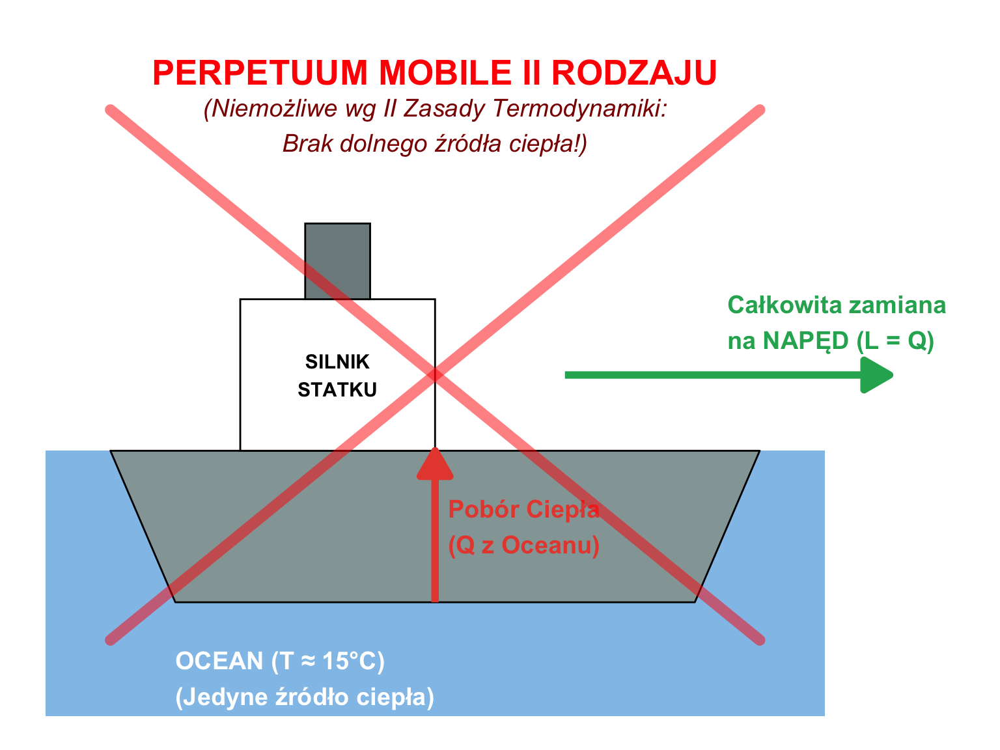
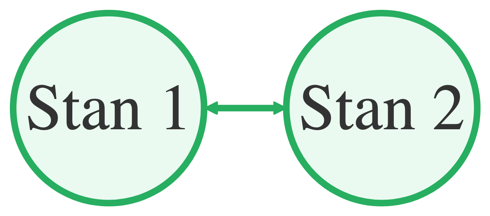
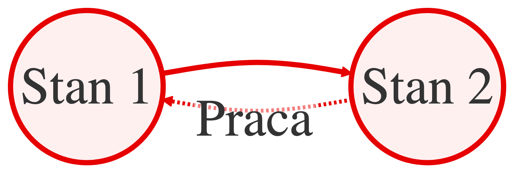
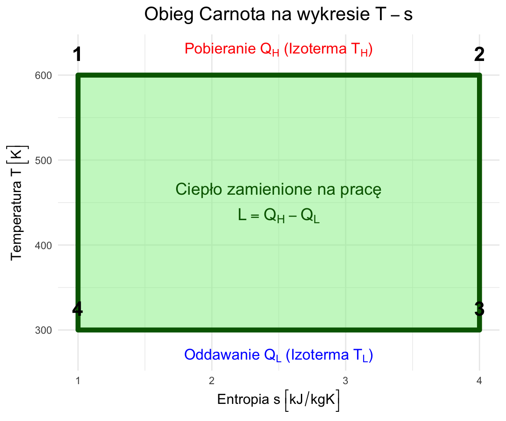

W6: II Zasada Termodynamiki - I
Silniki Cieplne, Obieg Carnota i Nieodwracalność
prof. UPP dr hab. inż. Marek Urbaniak
Wydział Inżynierii Środowiska i Inżynierii Mechanicznej


Agenda Wykładu
- Ograniczenia I Zasady (Kierunek Procesów)
- Silniki Cieplne i Pompy Ciepła (Zasada Działania)
- Sformułowania II Zasady (Kelvin vs Clausius)
- Procesy Odwracalne i Nieodwracalne
- Obieg Carnota (Silnik Idealny)
- Skala Termodynamiczna Temperatury
1. Dlaczego I Zasada to za mało?
Kierunek Procesów
I Zasada Termodynamiki mówi o zachowaniu energii (bilans musi wyjść na zero). Ale nie mówi nic o kierunku przemian.
- Dlaczego ciepło płynie samoistnie tylko z ciała cieplejszego do zimniejszego?
- Dlaczego wrzątek stygnie, ale zimna woda sama się nie zagotuje (pobierając ciepło z otoczenia)?
- Dlaczego, gdy upuścisz szklankę, rozbija się na kawałki, ale kawałki nigdy same nie złożą się w szklankę?
Problem
I Zasada nie zabrania procesom biec “wstecz”, o ile energia się zgadza. Jednak w rzeczywistości tak się nie dzieje. Potrzebujemy II Zasady (“Drogowskazu”).
Przykłady Procesów Nieodwracalnych
Dlaczego film puszczony od tyłu wygląda nienaturalnie?
- Rozprężanie swobodne gazu: Gaz wypuszczony z butli do próżni nigdy sam nie wróci do butli, chociaż energia by na to pozwoliła.
- Mieszanie płynów: Kawa z mlekiem nigdy sama się nie rozdzieli .
- Tarcie: Tarcie zamienia pracę na ciepło. Ogrzanie klocka hamulcowego nie sprawi, że samochód zacznie jechać.
- Przepływ ciepła: Ciepło płynie tylko \(\Delta T > 0\).
Adnotacja
Wszystkie te procesy generują Entropię (miarę nieporządku), o czym powiemy w W7.
2. Źródła Ciepła (Rezerwuary)
Aby zbudować silnik, potrzebujemy dwóch źródeł ciepła o dużej pojemności cieplnej (ich temperatura się nie zmienia mimo poboru ciepła):
- Źródło górne (\(T_H\)): Piec, Reaktor Jądrowy, Słońce. Dostarcza ciepło \(Q_H\) (High).
- Źródło dolne (\(T_L\)): Rzeka, Atmosfera, Grunt. Odbiera ciepło odpadowe \(Q_L\) (Low).
Podstawą II Zasady jest nieodwracalność samorzutnych procesów przyrody. Zachodzą one od stanu wyższym potencjal do stanów opotencjale niższym.
Silnik Cieplny
Urządzenie cykliczne, które zamienia ciepło na pracę.
- Pobiera ciepło \(Q_H\) ze źródła o wysokiej temperaturze (\(T_H\)).
- Zamienia część tego ciepła na pracę użyteczną \(L\).
- Oddaje pozostałe (niewykorzystane) ciepło \(Q_L\) do źródła dolnego (\(T_L\)).
Sprawność Termiczna
\[ \eta_{th} = \frac{\text{Korzyść}}{\text{Koszt}} = \frac{W_{net}}{Q_H} = \frac{Q_H - Q_L}{Q_H} = 1 - \frac{Q_L}{Q_H} \]
Chłodziarka i Pompa Ciepła
To “odwrócony” silnik cieplny.
- Pobiera ciepło \(Q_L\) z zimnego wnętrza (\(T_L\)).
- Wymaga dostarczenia pracy \(L\) (sprężarka).
- Oddaje ciepło \(Q_H\) do ciepłego otoczenia (\(T_H\)).
Współczynniki Efektywności (COP)
- Chłodziarka: Cel to \(Q_L\). \[ COP_R = \frac{Q_L}{W} \]
- Pompa Ciepła: Cel to \(Q_H\) (ogrzewanie). \[ COP_{HP} = \frac{Q_H}{W} = COP_R + 1 \]
Przykład Obliczeniowy: Silnik
Załóżmy, że silnik pobiera \(Q_H = 100 \text{ kJ}\) ciepła z pieca i wykonuje \(L = 30 \text{ kJ}\) pracy.
Ile ciepła oddaje do otoczenia (\(Q_L\))? \[ Q_L = Q_H - L = 100 - 30 = 70 \text{ kJ} \]
Jaka jest sprawność termiczna (\(\eta_{th}\))? \[ \eta_{th} = \frac{L}{Q_H} = \frac{30}{100} = 0.30 = 30\% \]
Wniosek:
Większość energii (70%) jest marnowana jako ciepło odpadowe! To typowa wartość dla silników spalinowych.
Analiza COP (Współczynnik Wydajności)
Dlaczego \(COP\) może być większe od 1 (np. 3 lub 4)? Czy to perpetuum mobile? NIE!
- Pompujemy ciepło, a nie je wytwarzamy.
- Płacimy pracą (\(L\)) tylko za przenoszenie energii. \[ COP_{HP} = \frac{Q_H}{L} = \frac{Q_L + L}{L} = \frac{Q_L}{L} + 1 = COP_R + 1 \]
Wniosek:
Jeśli \(COP_{HP} = 4\), to za każde 1 kWh prądu otrzymujemy 4 kWh ciepła w domu (1 kWh z prądu + 3 kWh z darmowego powietrza na zewnątrz).
3. Sformułowania II Zasady
Sformułowanie Kelvina-Plancka
Nie jest możliwy proces cykliczny, którego jedynym wynikiem byłoby pobranie ciepła ze źródła i zamiana go w całości na pracę.
Wniosek:
Silnik o sprawności 100% jest niemożliwy.
Musimy oddać część ciepła \(Q_L\) do chłodnicy. \(Q_L \neq 0\).
Sformułowanie Clausiusa
Nie jest możliwe zbudowanie urządzenia, którego jedynym skutkiem byłoby przeniesienie ciepła z ciała zimnego do ciała ciepłego.
Wniosek:
Chłodziarka musi zużywać prąd. Ciepło nie popłynie “pod górę” samoistnie.
Równoważność Sformułowań
Te dwa twierdzenia brzmią różnie, ale są równoważne.
Złamanie jednego, oznacza złamanie też drugiego.
- Gdyby silnik byłw w 100% sprawny (łamie K-P), możnaby nim zasilić pompę ciepła, co w rezultacie pompowałoby ciepło z zimnego do ciepłego bez udziału pracy z zewnątrz (łamie Clausiusa).
Perpetuum Mobile II Rodzaju
Urządzenie, które łamie II Zasadę Termodynamiki (Sformułowanie Kelvina-Plancka).
Wyobraźmy sobie statek, który pobiera ciepło z oceanu (\(T \approx 15^\circ C\)) i zamienia je w całości na napęd.
- I Zasada? Spełniona (Energia z wody \(\to\) Praca).
- II Zasada? Złamana (Brak \(Q_L\), \(\eta = 100\%\)).
NIEMOŻLIWE \[ Q_H \to [SILNIK] \to L \] (Brak strzałki \(Q_L\))

Takie urządzenie nie narusza bilansu energii, ale jest niemożliwe fizycznie.
4. Procesy Odwracalne i Nieodwracalne
Proces Odwracalny
Można go cofnąć bez śladu w otoczeniu.

Proces Nieodwracalny
Cofnięcie wymaga pracy z zewnątrz.

Źródła Nieodwracalności
Co sprawia, że procesu nie da się cofnąć bez strat?
- Tarcie (Solidne i lepkość płynów) - zamiana pracy na ciepło jest jednostronna.
- Nierównowaga sił (Gwałtowne rozprężanie) - ciśnienie wewnętrzne jest znacznie wyższe niż zewnętrzne.
- Wymiana ciepła przy skończonym \(\Delta T\) - im większa różnica temperatur, tym większa nieodwracalność.
- Reakcje chemiczne - spalanie jest wysoce nieodwracalne (nie da się odzyskać paliwa ze spalin przez ogrzanie).
- Opór elektryczny - przepływ prądu zawsze generuje ciepło Joule’a.
Proces Kwazistatyczny (Wewnętrznie Odwracalny)
Aby proces był odwracalny, układ musi przechodzić przez ciąg stanów równowagi.
- Dzieje się to “nieskończenie powoli”.
- W każdym momencie \(P_{układu} \approx P_{otoczenia}\).
- W każdym momencie \(T_{układu} \approx T_{otoczenia}\).
Taki proces to idelizacja (jak punkt materialny w mechanice). Służy do wyznaczenia teoretycznych granic wydajności.
5. Obieg Carnota: Wzorzec Doskonałości
Sadi Carnot (1824) wymyślił najbardziej sprawny możliwy silnik, działający między dwoma temperaturami \(T_H\) i \(T_L\).
Składa się z 4 procesów odwracalnych:
- Izotermiczne rozprężanie (w \(T_H\)): Pobranie ciepła \(Q_H\).
- Adiabatyczne rozprężanie: Temperatura spada z \(T_H\) do \(T_L\). Praca wykonana kosztem energii wewn.
- Izotermiczne sprężanie (w \(T_L\)): Oddanie ciepła \(Q_L\).
- Adiabatyczne sprężanie: Temperatura rośnie z \(T_L\) do \(T_H\).

Źródło: \(Termodynamika \ techniczna\) 2000, J. Szargut.
Obieg Carnota: Krok po Kroku (1-2)
- Stan: Kontakt ze źródłem górnym \(T_H\).
- Proces: Gaz rozpręża się powoli, wykonując pracę na tłoku.
- Energia: Aby \(T=const\), gaz musi pobrać ciepło \(Q_H\).
- Entropia: Rośnie (dostarczamy ciepło).
- Stan: Izolacja termiczna (brak wymiany ciepła).
- Proces: Dalsze rozprężanie kosztem energii wewnętrznej.
- Efekt: Temperatura spada z \(T_H\) do \(T_L\).
- Entropia: Stała (\(dQ=0\), proces odwracalny).
Obieg Carnota: Krok po Kroku (3-4)
- Stan: Kontakt ze źródłem dolnym \(T_L\).
- Proces: Tłok spręża gaz (praca zewnętrzna).
- Energia: Aby \(T=const\) (gaz nie ogrzewa się), musimy oddać ciepło \(Q_L\).
- Entropia: Maleje (oddajemy ciepło).
- Stan: Izolacja termiczna.
- Proces: Dalsze sprężanie podnosi temperaturę.
- Efekt: Temperatura wraca z \(T_L\) do \(T_H\). Zamykamy cykl.
- Entropia: Stała.
Wizualizacja Obiegu Carnota (T-s)
Na wykresie T-s (Temperatura-Entropia) obieg Carnota to idealny prostokąt.
- Izotermy (\(T=const\)): Poziome.
- Adiabaty odwracalne (\(s=const\)): Pionowe.
\[ \eta_{Carnot} = 1 - \frac{T_L}{T_H} \]
To maksymalna teoretyczna sprawność, maszyny cieplnej.

Wnioski z Carnota
\[ \eta = 1 - \frac{T_L}{T_H} \]
- Sprawność zależy tylko od temperatur. Nie zależy od czynnika roboczego (powietrze, para, hel - bez znaczenia).
- Im wyższa \(T_H\), tym lepiej. Dlatego w elektrowniach dążymy do jak najwyższych temperatur pary (np. \(600^\circ C\)).
- Im niższa \(T_L\), tym lepiej. Ale jesteśmy ograniczeni temperaturą otoczenia (ok. \(20^\circ C\) lub \(300 K\)).
- \(\eta < 100\%\): Aby mieć \(\eta=1\), musielibyśmy mieć \(T_L = 0 K\) (niemożliwe).
Potrzeba Niezależnej Skali Temperatury
Tradycyjne termometry (rtęciowe, alkoholowe) zależą od właściwości substancji.
- Rozszerzalność rtęci nie jest idealnie liniowa w każdej temperaturze.
- Różne termometry mogą wskazywać nieco inne wartości.
Potrzebujemy skali uniwersalnej, niezależnej od użytego materiału. Taką skalę daje nam II Zasada Termodynamiki i Silnik Carnota.
Termodynamiczna Skala Temperatury (Kelvina)
Lord Kelvin zaproponował definicję temperatury opartą na sprawności silnika Carnota:
\[ \frac{Q_H}{Q_L} = \frac{T_H}{T_L} \]
- Stosunek temperatur jest równy stosunkowi ciepła wymienianego w obiegu odwracalnym.
- Skala ta nie zależy od czynnika roboczego.
- Zero absolutne (\(0 K\)): Teoretyczny stan, w którym silnik Carnota miałby sprawność 100% (nie oddawałby ciepła \(Q_L=0\)).
Adnotacja
Jednostka Kelvina jest podstawową jednostką w układzie SI. \(T(K) = t(^\circ C) + 273.15\).
Podsumowanie W6
- II Zasada: Energia ma jakość. Procesy rzeczywiste są nieodwracalne (tarcie, \(\Delta T\)).
- Silniki: Nie ma silnika o sprawności 100% (Kelvin-Planck).
- Pompy Ciepła: Wymagają pracy, by transportować ciepło “pod górę” (Clausius).
- Carnot: Wyznacza teoretyczną granicę sprawności (\(\eta = 1 - T_L/T_H\)).
- Skala Termodynamiczna: Definiuje temperaturę niezależnie od substancji.
Zapowiedź W7
W kolejnym wykładzie zajmiemy się matematycznym opisem nieporządku - Entropią.
Termodynamika Techniczna (W6)